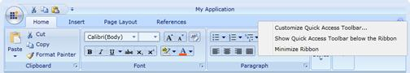
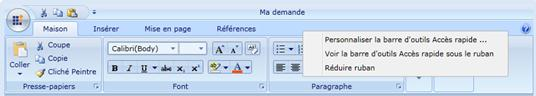
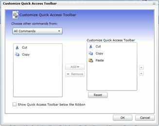
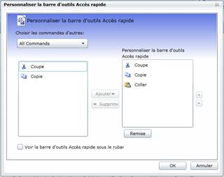

By Default, Current Culture will be “en-US”, which you can check from: “System.Threading.Thread.CurrentThread.CurrentUICulture”.
Now, change CurrentUICulture as you want, as shown below:
Here, CurentUICulture should be set before the IntializeComponent in your StartUp page (Here, MainPage.xaml.cs) or you can do it in App.xaml.cs in the Application_Startup event.
|
C# (MainPage.xaml.cs)
public MainPage() { System.Threading.Thread.CurrentThread.CurrentUICulture = new System.Globalization.CultureInfo("fr-FR");
InitializeComponent(); } |
Or
|
C# (App.xaml.cs)
private void Application_Startup(object sender, StartupEventArgs e) { System.Threading.Thread.CurrentThread.CurrentUICulture = new System.Globalization.CultureInfo("fr-FR"); this.RootVisual = new MainPage(); } |
The following illustrations show the Ribbon Control with various culture:

Figure 664: Ribbon Control (For Invariant Culture)

Figure 665: French Culture assigned as Current UI Culture for Ribbon Control

Figure 666: Customization Dialog (For Invariant Culture)

Figure 667: French Culture assigned as Current UI Culture for Customization Dialog